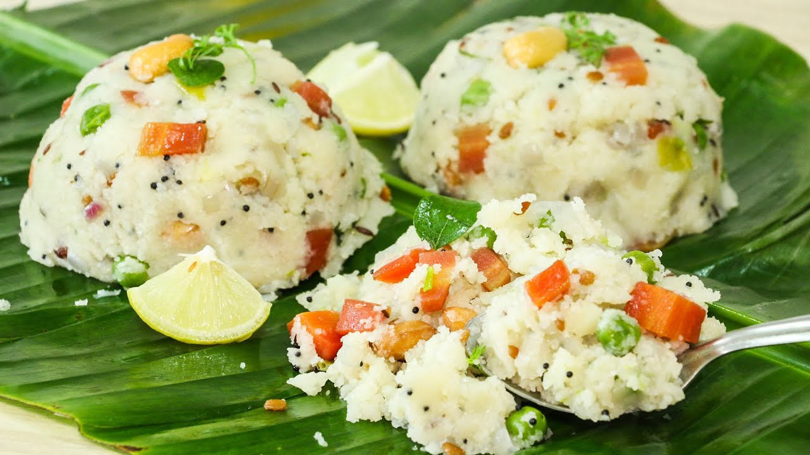

| Image | Dish | Popular Area | Description | Price |
|---|---|---|---|---|
 |
Poha | Kothrud | Flattened rice stir-fried with onions and mustard seeds | ₹20 - ₹30 |
|  | Upma | Erandwane | Savory semolina dish tempered with spices and vegetables | ₹25 - ₹35 |
 |
Misal Pav | Nal Stop | Spicy sprouted lentil curry with pav and farsan topping | ₹40 - ₹60 |
 |
Kanda Bhaji | Shivajinagar | Onion fritters deep-fried to golden crispiness | ₹20 - ₹30 |
 |
Pav Bhaji | JM Road | Spicy mashed veggies served with buttered pav | ₹50 - ₹70 |